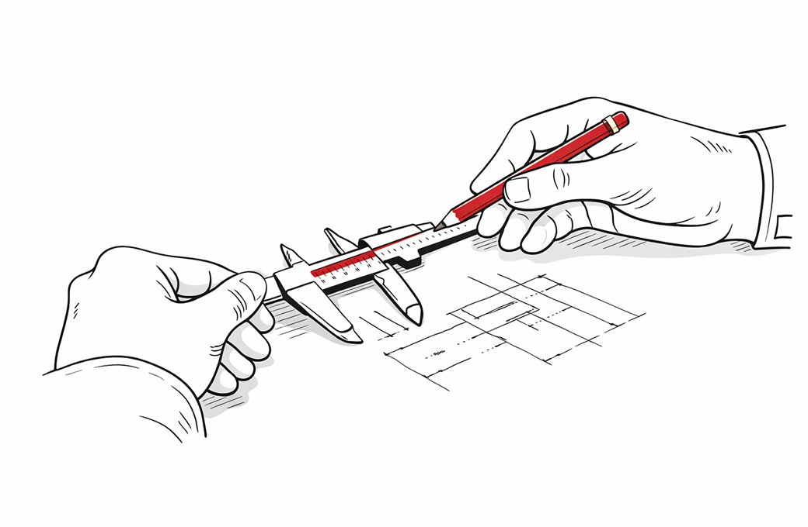
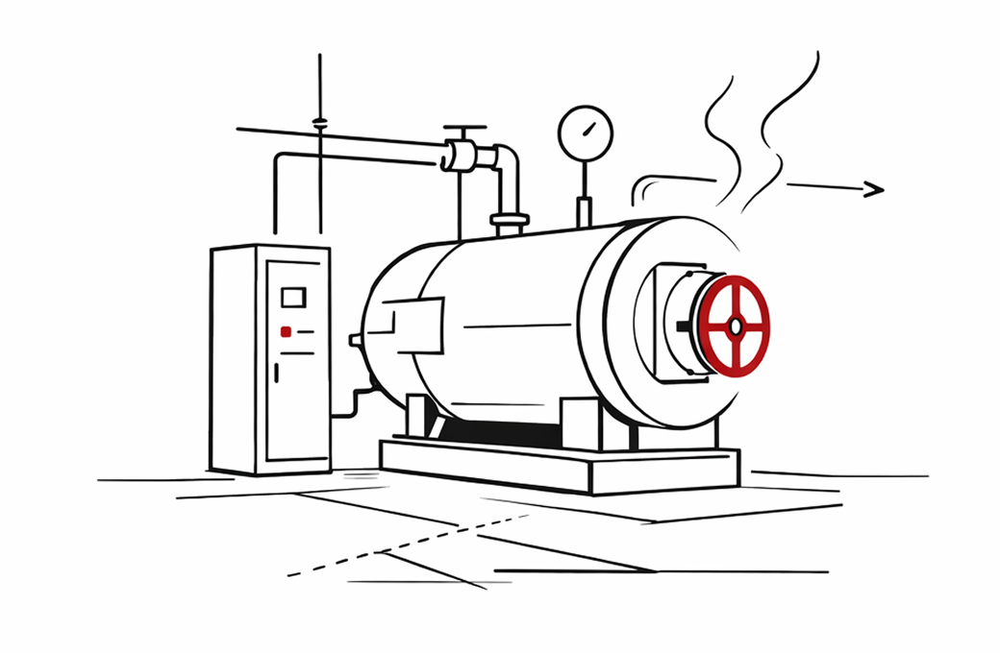
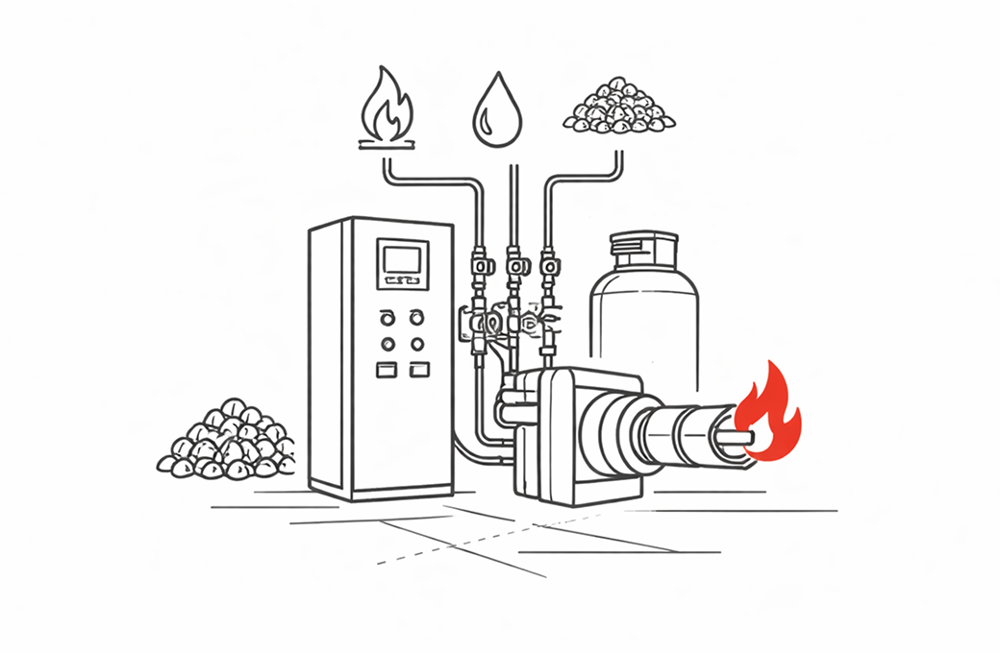

Naš pristup
Više od sedam decenija iskustva oblikuje načine na koji pristupamo projektovanju, realizaciji i održavanju energetskih sistema.

Tehnička preciznost
Svaki sistem zasnovan na proračunima, standardima i realnim radnim uslovima.

Odgovornost kroz generacije
Kontinuitet znanja i dugoročna odgovornost prema klijentima i sistemu.

Kompletna realizacija
Od projektne dokumentacije do finalne montaže i puštanja u pogon.

Rad na različitim gorivima
Prilagodljiva rešenja za prirodni gas, lako ulje, biomasu i višegorivo.